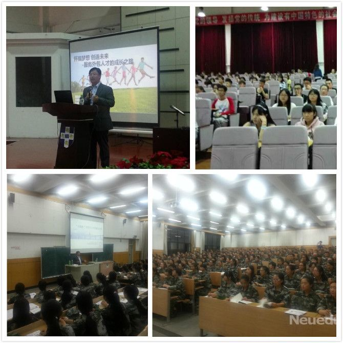

来源：来自东软睿道
9月16日下午，东软控股副总裁、东软睿道教育公司总裁李印杲老师相继来到黑龙江 外国语学院和哈尔滨学院， 分别向两个高校的学子们分享了“怀揣梦想 创造未来—服务外包人才的成长之 路”以及“互联网+时代IT人才的成长之路”的主题演讲。
演讲开始，李印杲总裁指出随着“互联网+”时代的来临，信息技术进一步推动服务外包需求变革， 以大数据、物联网 、移动互联网、云计算为代表的新一代信息技术正在加速与传统产业融合发展， 基于信息化、互联化的新兴商业模式 正在重新构建。 接下来，李印杲总裁提出IT及服务外包产业具有知识性、专业性、实践性的特点，决定了该产业必然 是智力型、应用型人才云集之地； 产业国际化亟需兼备技术和语言能力并能够跨文化沟通的人才。 近年国内毕业生数 量持续快速增长，面临着就业愈加困难的窘迫，同时企业和高校也陷入了人才需求和人才输出的“囚徒困境”中。 面对严峻的就业现实，李印杲总裁着重给出了对大学生的建议：“不断提升自己的软技能和硬技能，做好职业生涯规划 ，从现在开始职涯历程的起点； 聚焦IT方向，打好基础，积累相应的工作经验，为就业做好充分准备。”